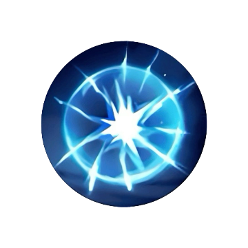

Often Used Battle Spells

Flicker
Provides mobility for engaging or escaping during team fights.
Sprint
Improves chasing potential and allows better repositioning.

Vengeance
Reflects damage while reducing incoming damage, making it ideal for durable EXP Laners.